The slide of the lecture is on the left, the same figure on the right, computed in the browser from the same data. The ▶ button moves the parameter step by step.
From Games of Chance to Axioms · Random Variables and Distributions · Expectation and Variance · Joint Distributions and Dependence · Conditional Expectation and Conditional Variance · The Law of Large Numbers and the CLT · Random Numbers and Monte Carlo · The Binomial Model · Discrete-Time Stochastic Processes · The Wiener Process and Geometric Brownian Motion
From Games of Chance to Axioms
Example: Down Days in a Row
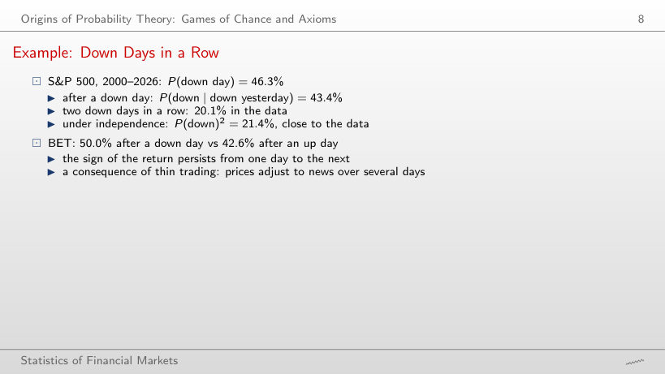
Conditional probabilities of the event D, daily log returns
Answer
11.85%, 2.8 times P(D). Two losses of more than 2% in a row have a frequency of 0.51%, against 0.18% under independence. The sign of the return barely persists for the S&P 500, but large losses come in clusters: volatility clustering. For BET the sign persists too, at x = 0: 50.0% after a down day against 42.6% after a day that is not down, an effect of thin trading.
Random Variables and Distributions
A Discrete and a Continuous Random Variable
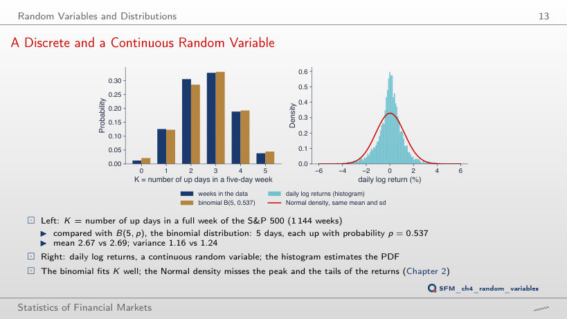
Answer
The variance of K exceeds the binomial value: 1.47 against 1.24, ratio 1.18. The binomial distribution assumes independent days; with the positive autocorrelation of BET returns, up days come one after another more often, so weeks with many or with few up days are more frequent. The mean stays close to 5p: 2.67 against 2.70. For the S&P 500, with autocorrelation −0.099, the ratio is 0.93; for the DAX also 0.93.
Empirical CDF and the 1% Quantile of the S&P 500
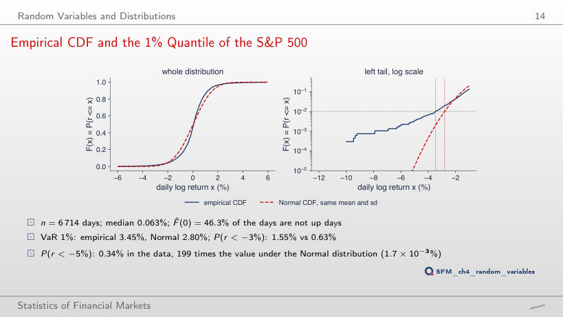
Answer
About 1.94: VaR 0.1% is 7.22% in the data and 3.72% under the Normal distribution. At α = 5% the ratio is 0.94 (1.85% against 1.97%). If the difference were only one of scale, the ratio would be the same at every level; it grows towards the tail, so the problem is the shape of the distribution: a higher peak and heavier tails. P(r < −5%) is 0.34% in the data and 1.7 × 10−3% under the Normal distribution, 199 times less.
Expectation and Variance
Worked Example: Annual Mean and Volatility
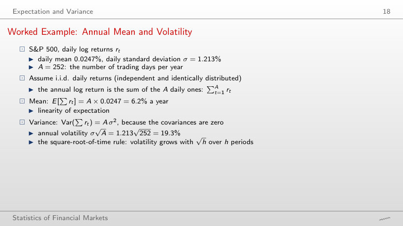
Moments of the daily log returns (%)
Worked example: the mean and volatility over h days
Answer
66.6% = 3.485 × √365. With A = 252, as for stocks, it would be 55.3%. The annual mean is 43.1% with A = 365 (29.8% with A = 252). The volatility grows with √A, the mean with A, and both assume i.i.d. returns. The excess kurtosis of 11.96 shows that the daily distribution is not Normal, even though the square-root-of-time rule uses only the variance.
How Rare Is a 4-Sigma Day? Chebyshev's Bound
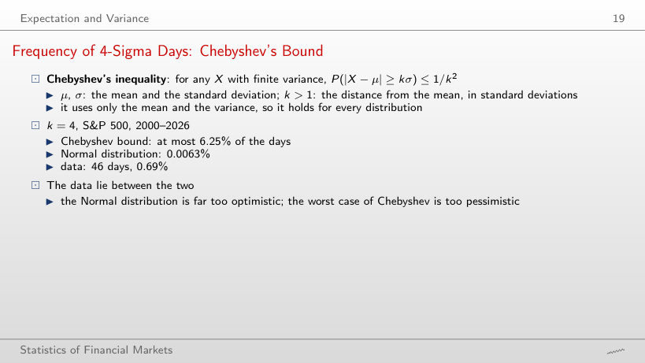
Days with |r − mean| > kσ: data, the Normal distribution and Chebyshev's bound
Worked example: Chebyshev's bound against the data
Answer
4.90% (329 days), close to 4.55% under the Normal distribution. At 2 standard deviations the data look like the Normal distribution; the difference is in the tail: at k = 4 there are 46 days (0.69%), 108 times the 0.0063% of the Normal distribution, and at k = 6 there are 12 days, against 1.3 × 10−5 expected days. Chebyshev's bound, 1/k², holds for any distribution with finite variance, which is why it lies far above the data.
Joint Distributions and Dependence
Joint Distributions of Daily Returns
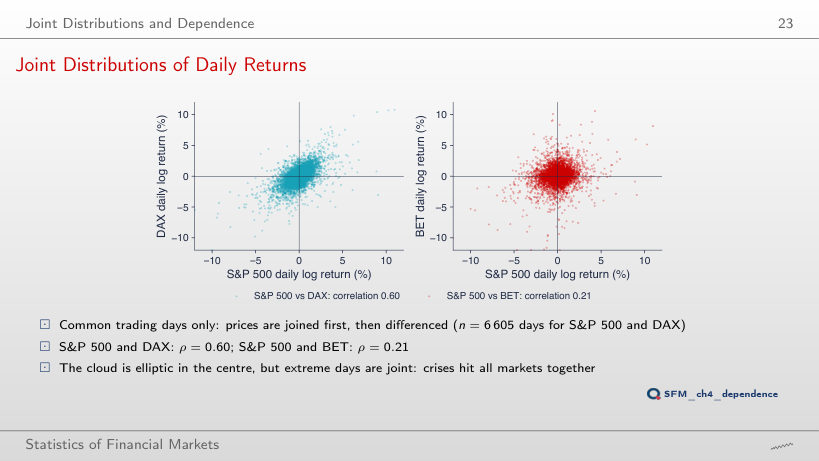
Answer
0.63, on 242 common days, three times the value over the whole period. In 2008 the correlation is 0.28, in 2017 0.20. For the S&P 500 and the DAX: 0.69 in 2020, 0.62 in 2008 and 0.57 in 2017, against 0.60 over the whole period. Correlation rises in crisis years, exactly when diversification would be needed.
Worked Example: a 50/50 Portfolio of S&P 500 and DAX
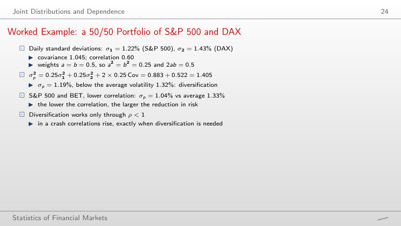
Variances, covariances and correlations of daily returns (%)
Pairs of series on their common days
Worked example: the volatility of the a/b portfolio
Answer
At a* = (σ2² − Cov)/(σ1² + σ2² − 2Cov) = 0.69, with σp = 1.163%, against 1.186% at a = 0.5. The S&P 500 gets the larger weight because its volatility is lower (1.221% against 1.429%), but not 1: with ρ = 0.60, some DAX still reduces the risk. For S&P 500/BET, with ρ = 0.21: a* = 0.60 and σp = 1.025%.
Conditional Expectation and Conditional Variance
Worked Example: Two Regimes
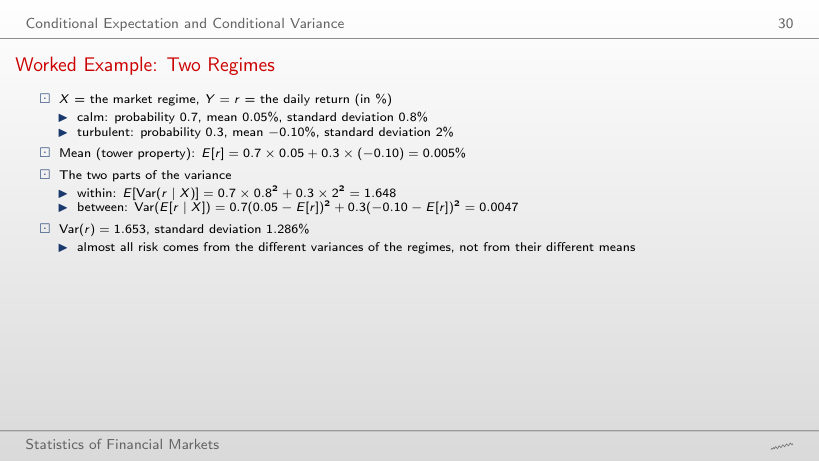
Two regimes: the components of the variance
Worked example: the mean and the total variance
The data: rt by the quintile of |rt−1|
Answer
1.776%: the within-regime variance rises to 0.7 × 0.8² + 0.3 × 3² = 3.148, and the between-regime component stays at 0.0047, so Var(r) = 3.153. The weighted average of the standard deviations, 0.7 × 0.8 + 0.3 × 3 = 1.46%, understates the risk: variances add, not standard deviations. In the data, for the S&P 500, the between-quintile component is 0.009% of the total variance.
Today's Return Given Yesterday's Move
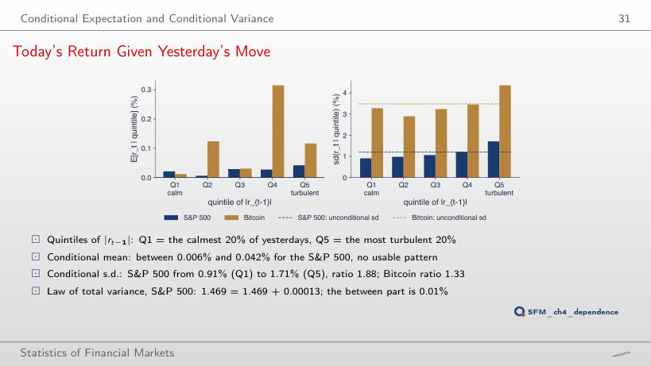
Answer
2.22: 2.03% in the most turbulent group against 0.92% in the calmest. With 2 groups the ratio is 1.43: the extreme groups are more extreme when they are narrower. The between-group component of the total variance stays negligible: 0.054% of the total with 10 groups, 0.009% with 5. Yesterday's move says a lot about today's risk and almost nothing about today's mean.
The Law of Large Numbers and the CLT
Two Limit Theorems
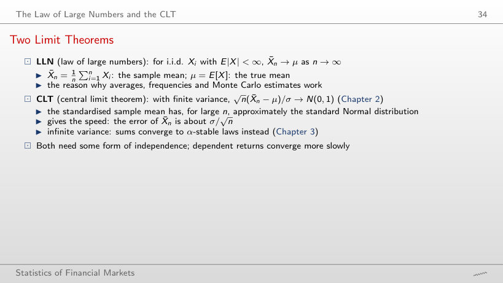
S&P 500: the running mean after n days
Worked example: the standard error of the mean
Answer
About 38 years: n = (2s/r̄)² = (2 × 1.213/0.0247)² = 9,633 days. t grows with √n, so a t that is 2/1.67 = 1.20 times larger needs 1.43 times as many days. A standard error half as large needs four times as many days (26,856). The running mean from 2000 is still negative after 100, 1,000 and 2,500 days.
The LLN for the Mean Return: Slow
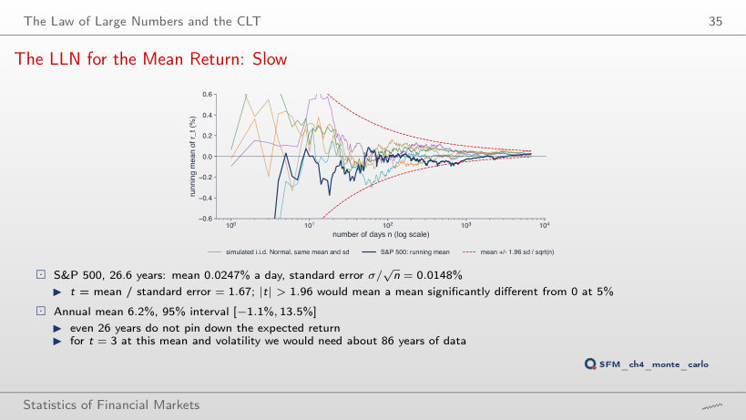
Answer
2.83: the daily mean is 0.0480% (12.1% per year), the standard error 0.0169%. The sample from 2009 starts after the 2008 crisis. From 2003, t = 2.38; from 2020, t = 1.64 with only 1,687 days. The 95% interval of the annual mean is [3.7%, 20.4%] from 2009 and [−1.1%, 13.5%] from 2000. The estimated mean depends strongly on the start of the sample; a start chosen after looking at the data no longer gives a valid test.
Random Numbers and Monte Carlo
Worked Example: an LCG with M = 16
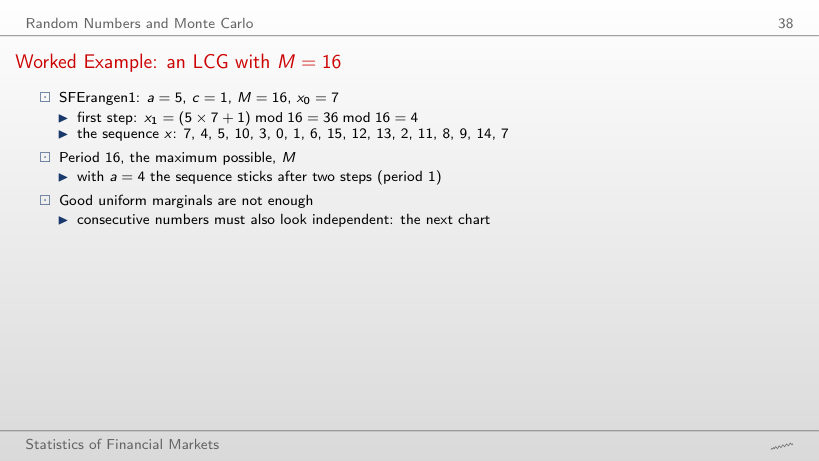
M = 16: the period for every multiplier a, with the chosen c and x0
Worked example: the steps of an LCG and its period
Answer
After two steps: x1 = 29 mod 16 = 13, x2 = 53 mod 16 = 5, then 4 × 5 + 1 = 21 ≡ 5, so the sequence stays at 5 (period 1). With M = 16 and an odd c, the maximal period 16 occurs exactly when a − 1 is a multiple of 4 (a = 1, 5, 9, 13, the Hull–Dobell condition); a = 1, however, gives the sequence 7, 8, 9, …, with a maximal period and nothing random about it.
RANDU: Random Numbers Fall Mainly in the Planes (SFErandu)
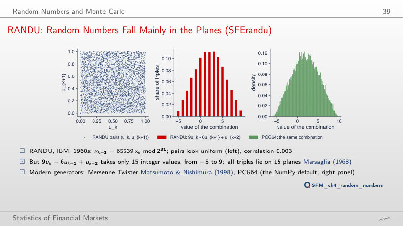
Answer
15, from −5 to 9, as for every odd seed. The relation comes from the multiplier: 65539 = 216 + 3, so a² = 6a − 9 (mod 231) and xk+2 = 6xk+1 − 9xk (mod 231), whatever x0. The correlation of the pairs stays small (0.0078 for x0 = 99), so a test on pairs does not see the flaw. With PCG64, the combination takes 29,998 different values in 29,998 triples.
The Inverse Transform Method
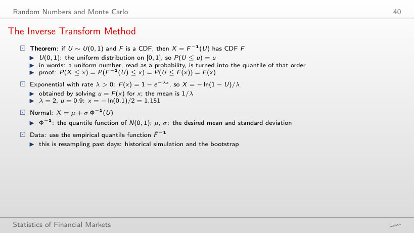
Worked example: the same u through three quantile functions
The left tail of the 200,000 draws of the lecture (S&P 500)
Answer
For u > 1 − e−1 = 0.632: P(X > 0.5) = e−λ × 0.5 = e−1 = 36.8%. The median is ln 2/λ = 0.347, below the mean: the exponential distribution is skewed to the right. In the table, the 7 Normal draws below −5%, against 3.4 expected, differ by 1.9 Poisson standard deviations (√3.44 = 1.85): simulation noise, not a flaw of the method.
Inverse Transform: Exponential, Normal and Historical
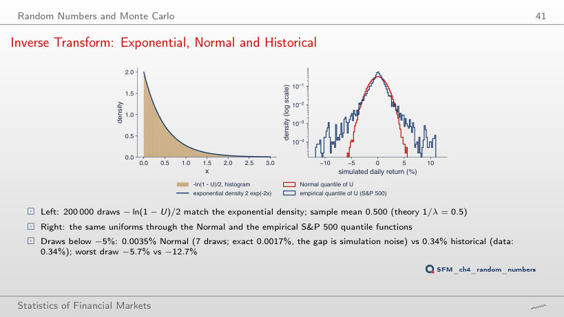
Answer
1.7 × 10−3%, i.e. 0.0017%, or 3.4 expected draws out of 200,000. With so few events, the standard deviation of the number of draws is about √3.4 ≈ 1.84, so 7 draws are simulation noise, not a flaw of the method. The historical draws give 0.34% (685 of 200,000), as the data: the inverse transform with the empirical quantile function reproduces the tail of the sample. At −8%: no Normal draw, 148 historical ones.
Worked Example: a Monthly Loss Probability by Monte Carlo (2/2)
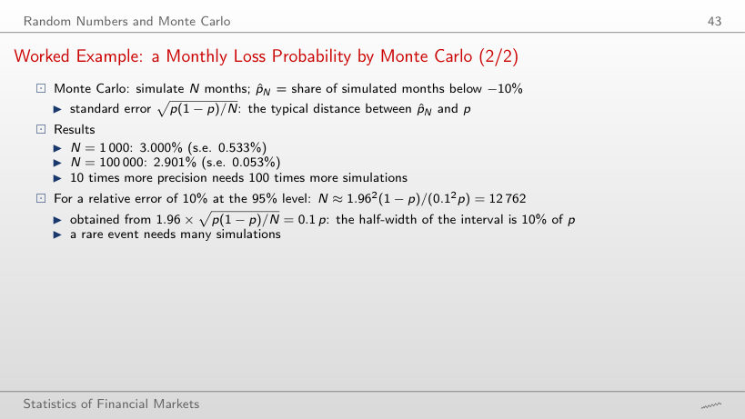
The Monte Carlo estimate and its standard error
Worked example: the exact probability, the estimate and the standard error
Answer
√(p(1 − p)/N) = 0.0334%, three times p. With 1,000 simulations the estimate is 0 (no simulated month below −20%); with 100,000 it is 0.007%, with one million 0.0117% (standard error 0.0011%). For L = 10%, the standard error at N = 1,000 is 0.533%, i.e. 18% of p = 2.922%.
Monte Carlo Converges at Rate 1/√N
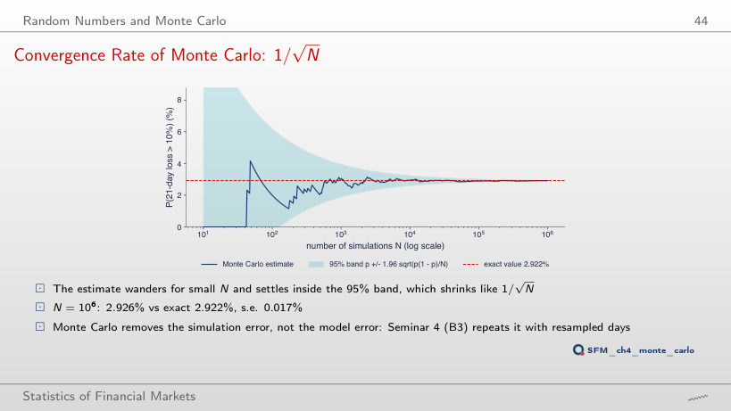
Answer
About 146,000 (146,201): p falls from 2.922% to 0.262%, and N ≈ 1.96²(1 − p)/(0.1² p) grows almost as 1/p. For 20%, p = 0.0112% and N = 3.44 million; with one million simulations the estimate is 0.0117%, with standard error 0.0011%, about 10% of p. The absolute error √(p(1 − p)/N) falls with p, but the relative error grows.
The Binomial Model
Worked Example: a Two-Step Tree
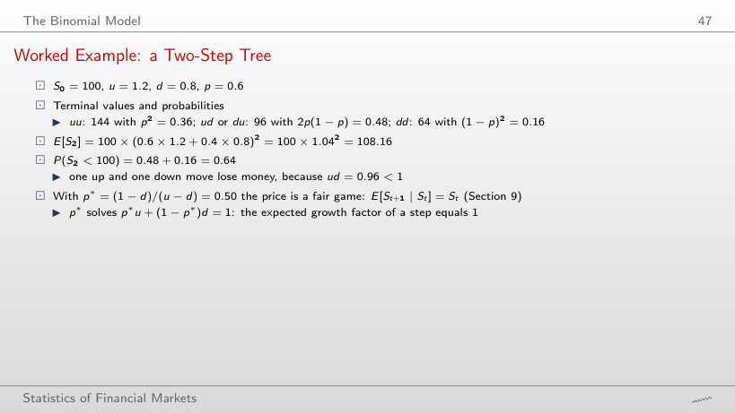
The terminal nodes of the tree, S0 = 100 (highlighted rows: Sn < 100)
Worked example: the mean, the probability of a loss and p*
Answer
0.352: the nodes are 172.8, 115.2, 76.8 and 51.2, and below 100 are those with at most one up move: 0.4³ + 3 × 0.6 × 0.4² = 0.064 + 0.288. With two steps, the node ud = 96 was below 100 because ud = 0.96 < 1; with three steps, the node with two up moves is 115.2. The mean E[S3] = 100 × 1.04³ = 112.49 grows with n in any case.
Calibrating the Tree to a Market (Cox–Ross–Rubinstein)
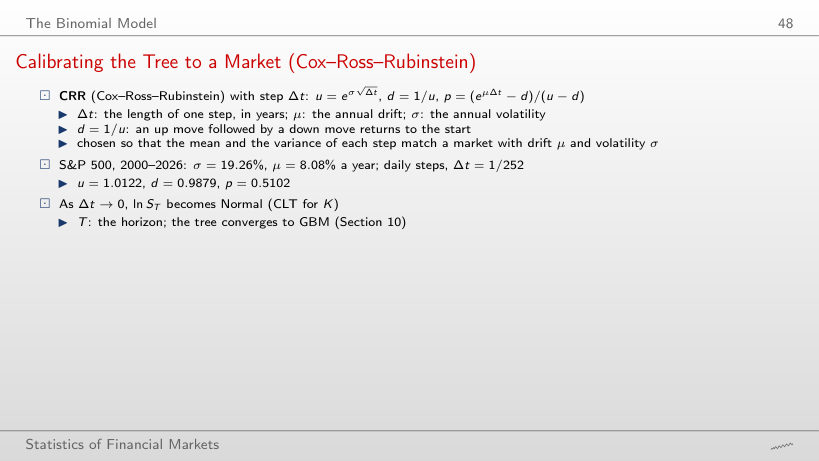
The CRR tree calibrated to the S&P 500 (σ = 19.26%, μ = 8.08%), S0 = 100, T = 1 year
Worked example: P(ST ≤ 100) and P(ST < 100)
Answer
34.9%. The 39.7% is P(ST ≤ 100): it includes the node ST = 100 (k = 126 up moves), with probability C(252, 126)p126(1 − p)126 = 4.8%. The lognormal limit, 37.3%, is practically the average of the two values. With an odd number of steps there is no node at 100: 37.3% with 251 and with 253 steps.
Binomial Paths and the Lognormal Limit (SFEBinomp)
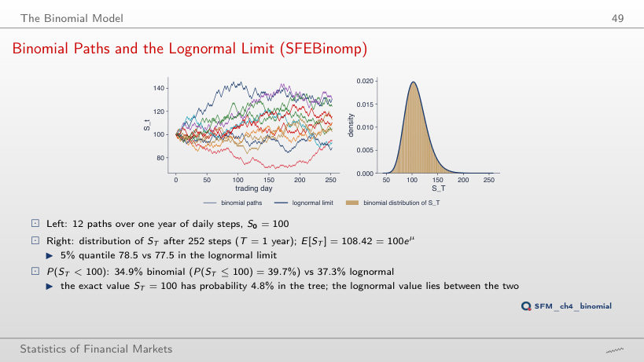
Answer
61.9%, of which 47.3% is the node ST = 100 (one up and one down move, ud = 1); P(ST < 100) is only 14.7%. With an even n, the tree has a node exactly at S0, with a probability that falls as 1/√n: 6.7% at 126 steps, 4.8% at 252. With 5 steps there is no such node and P(ST < 100) = 36.5%. The 39.7% of the slide is P(ST ≤ 100); strictly below 100 is 34.9%. E[ST] = 108.42 for every n, by the construction of p.
Discrete-Time Stochastic Processes
The AR(1) Process: Simulation
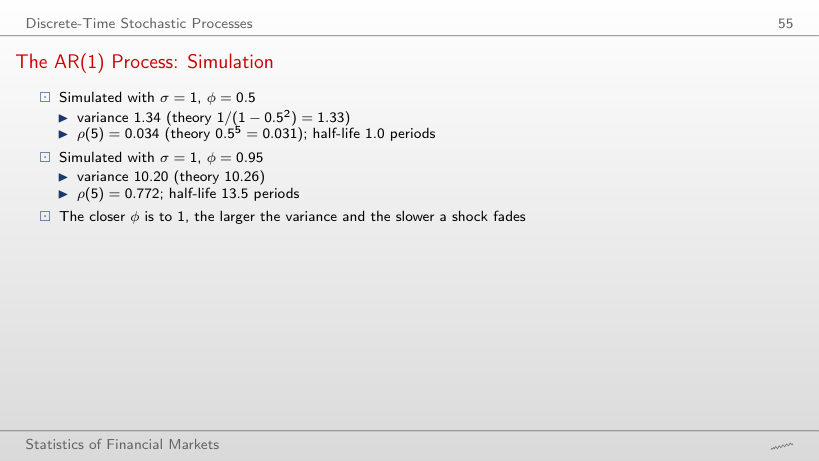
AR(1) with σ = 1: theoretical values, the 500 shocks of the chart and the long simulation of the lecture
Worked example: the variance, the autocorrelation and the half-life
Answer
ln 0.5/ln 0.9 = 6.6 periods. The stationary variance is 1/(1 − 0.81) = 5.26, and ρ(5) = 0.9⁵ = 0.590. On the 500 shocks of the chart, the sample variance of the process with φ = 0.9 is 6.44: with high persistence, 500 points contain few nearly independent stretches, and the sample variance moves away from the theoretical value.
White Noise, AR(1) and Random Walk, Same Shocks
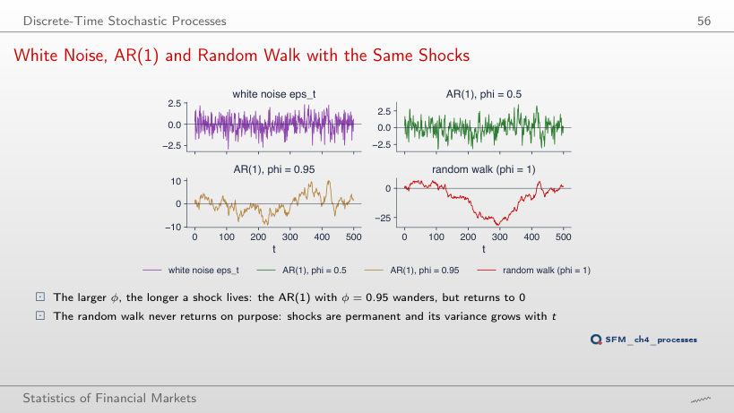
Answer
ln 0.5/ln 0.99 = 69.0 periods, five times as long. The stationary variance 1/(1 − φ²) rises from 10.26 to 50.25, and ρ(5) = 0.99⁵ = 0.951. The process is still stationary and returns to 0, but over 500 points it is hard to tell from a random walk; only φ = 1 makes the shocks permanent.
Question for the Room: Which One Is Real?
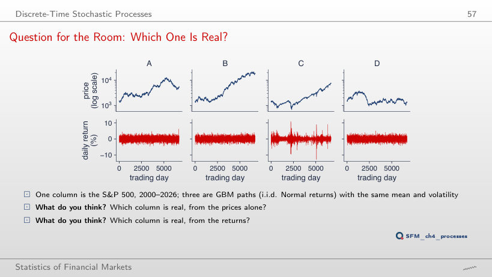
Answer
Column C. The prices do not tell it apart: random walks with drift also have long rallies and falls. The returns do: excess kurtosis 10.67 against at most 0.02 in the simulations, Corr(rt², rt−1²) = 0.313 against at most 0.006, the largest daily move 12.8% against 6.2%. Beyond 4 standard deviations: 46 days in C, at most one in the simulated columns; beyond 6 standard deviations: 12 days in C, none in the simulations.
The Wiener Process and Geometric Brownian Motion
From Random Walks to the Wiener Process (SFEWienerProcess)
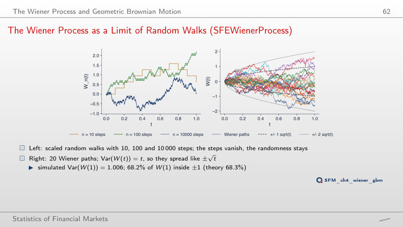
Answer
95.37% in the simulation, theoretically 2Φ(2) − 1 = 95.45%, because W(1) ~ N(0, 1). Chebyshev's inequality only guarantees at least 1 − 1/2² = 75%, for any distribution with finite variance. The band ±k√t describes the distribution of W(t), not a bound on the paths: of the 20 paths of the chart, all end within ±2, but only 14 within ±1. For k = 3: 99.67% against 99.73%.
GBM: Mean, Median and Simulation
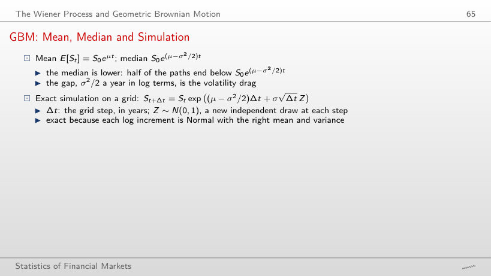
GBM calibrated to each series, S0 = 100
Worked example: the mean, the median and the quantile of ST
Answer
eσ²T/2 = e0.666² × 5 = 9.2 times: mean 68,252, median 7,437. The ratio of the mean to the median depends only on σ²T. For the S&P 500 (σ = 19.26%) the ratio is 1.20 (224.4 against 186.4). The mean of a GBM is dominated by a few very large paths; a typical path follows the median.
GBM Calibrated to the S&P 500 (SFEsimGBM)
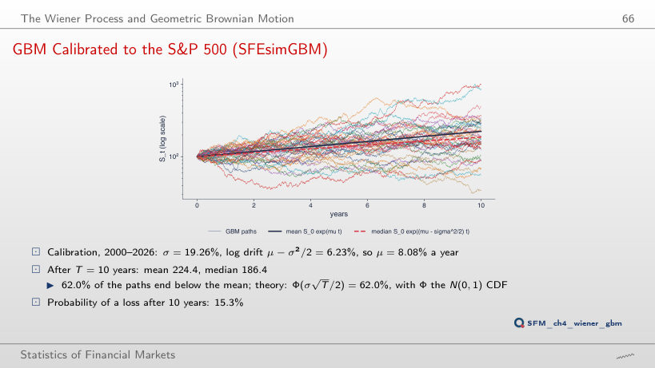
Answer
At 100.8 = 100e(0.0808 − 0.08) × 10: the log drift μ − σ²/2 falls to 0.08% per year. The mean stays at 224.4, because it depends only on μ. The probability of a loss after 10 years rises from 15.3% (σ = 19.26%) to 49.7%, and the share of paths below the mean, Φ(σ√T/2), from 62.0% to 73.6%. σ = 40% is an extra run of the chapter's formulas, not a result of the lecture.
Real Paths in the GBM Fan
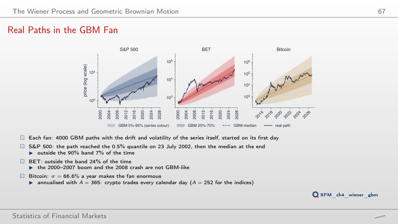
Answer
12.7%: less, but 13 times the nominal value; the boom of 2000–2007 and the crash of 2008 take the path far from GBM. S&P 500: 7.0% outside the 90% band and 0.0% outside the 99% band; Bitcoin: 4.5% and 0.1%. The days of a single path are not independent observations: the path stays on the same side of the median for a long time, so even the S&P 500 is outside the 50% band on 64.2% of the days.
What GBM Misses
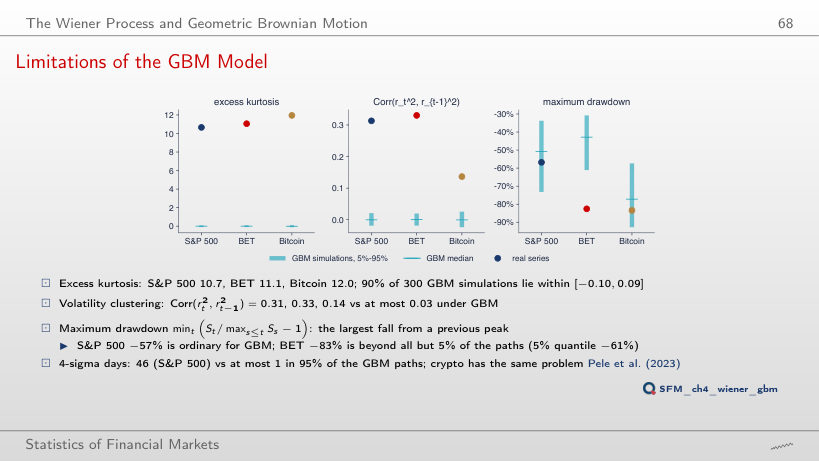
Days with |r − mean| > k standard deviations: data, GBM simulations and the Normal distribution
Answer
12 days in the data and 0 in each of the 300 simulations. BET has 17 such days, Bitcoin 4. At k = 3, the S&P 500 has 105 days, against a GBM median of 18; at k = 8, still 4 days. Under the Normal distribution, the expected number of days beyond 6 standard deviations in 6,714 days is of the order of 10−5.
Daily log returns, in %: S&P 500, DAX and BET from January 2000, Bitcoin from September 2014 (7 days a week), to 18 September 2026. EODHD closing prices. The simulations are those of the lecture: the same models, the same numbers of paths and the same generator seeds.